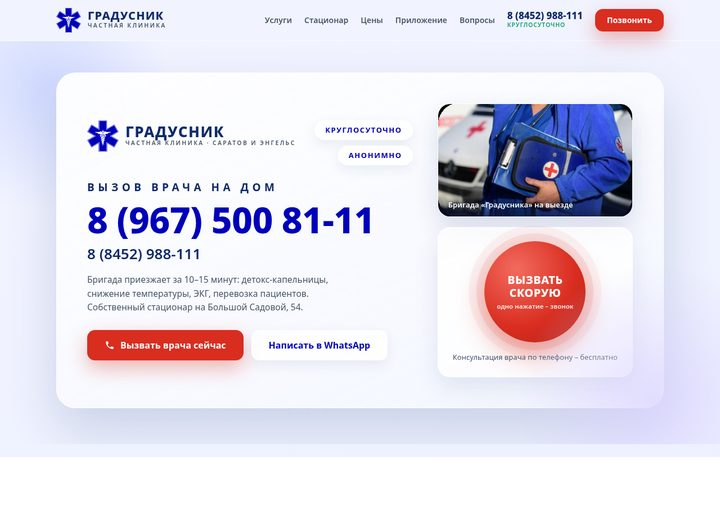
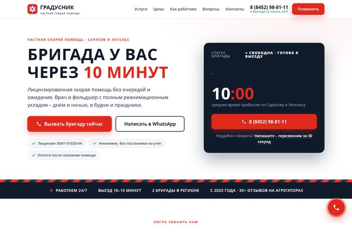
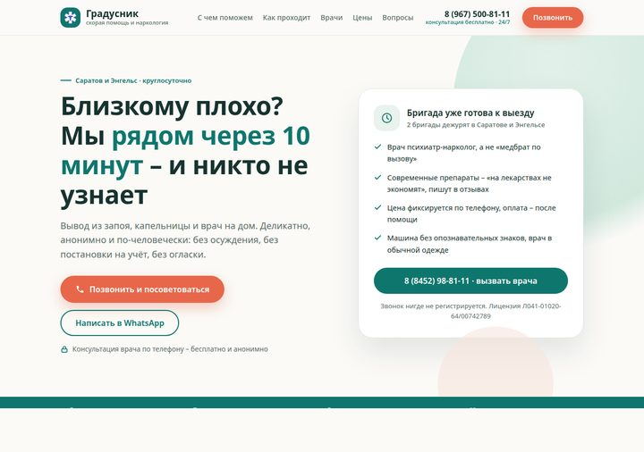

«Градусник» – три варианта сайта
Все три собраны на маркетинговом исследовании рынка Саратова: цены-якоря, отзывы, лицензия с выпиской из реестра, кнопки звонка на каждом экране. Открывайте с телефона – именно так сайт увидит большинство пациентов.

Фирменный «Glass Air»
В утверждённом стиле визитки и приложения: логотип, синий #0000BB, стеклянные карточки, красная кнопка вызова как в приложении, стационар и QR установки.
Открыть макет
«Красный код»
Экстренная подача: счётчик «10 минут», ЭКГ-линия, максимальный акцент на срочный звонок. Под рекламу по запросам «скорая помощь срочно».
Открыть макет
«Забота»
Мягкая, доверительная подача для родственников: анонимность, путь помощи из 4 шагов, врачи и отзывы. Под запросы «вывод из запоя на дому».
Открыть макетЧерновые макеты для согласования · тексты, цены и фото уточняются · «Градусник», Саратов · 2026